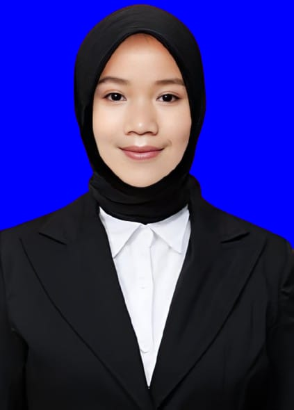

Profil Pribadi |
||
| Nama | : Novi Amelia |  |
| Alamat | : Bangkalan | |
| Tempat, Tanggal Lahir | : Bangkalan, 30-10-2006 | |
| Nomor HP | : 082110196741 | |
| : noviamelia0102@gmail.com | ||
Riwayat Pendidikan |
||
| SD | : SDN Kelbung 2 (2012-2018) | |
| SMP | : SMPN 2 Sepulu (2018-2021) | |
| SMK | : SMKN 1 Sepulu (2021-2024) | |
Hobi dan Minat |
||
| Hobi | : Mencoba hal baru,voli,Game | |
| Minat | : Menguasai skill baru | |
Pengalaman akademik/non-akademik |
||
|
Sejak SMP, saya sudah tertarik untuk bergabung dengan OSIS karena ingin lebih aktif dalam kegiatan sekolah dan mengembangkan keterampilan kepemimpinan. Awalnya, saya bergabung di Bidang Bela Negara, di mana saya belajar banyak tentang kedisiplinan, tanggung jawab serta pentingnya memiliki rasa cinta terhadap tanah air. Selain itu, saya juga aktif di Bidang Humas, yang mengajarkan saya cara menyampaikan informasi dengan baik dan menjalin komunikasi dengan berbagai pihak, baik di dalam maupun di luar sekolah. Saat memasuki SMK, keinginan saya untuk lebih berkembang semakin kuat. Saya pun kembali bergabung dengan OSIS, dan pada tahun kedua, saya diberi kepercayaan untuk menjabat sebagai Koordinator Bidang Humas dan Kewirausahaan. Tanggung jawab saya semakin besar, terutama dalam mengatur strategi komunikasi sekolah dan mengembangkan program kewirausahaan bagi siswa. Sebagai Koordinator Humas, saya bertugas menjalin hubungan dengan berbagai pihak, termasuk sekolah lain, komunitas, dan sponsor dalam berbagai acara yang kami adakan. Pengalaman ini mengajarkan saya betapa pentingnya membangun relasi yang baik serta memiliki kemampuan komunikasi yang jelas dan efektif. Sementara itu, di Bidang Kewirausahaan, saya bersama tim mengadakan berbagai kegiatan seperti bazar sekolah, pelatihan bisnis, dan penggalangan dana untuk acara OSIS. Saya belajar bagaimana mengelola sebuah proyek, mengatur keuangan, serta mencari peluang usaha yang bisa dikembangkan di lingkungan sekolah. Bergabung dalam OSIS selama bertahun-tahun memberikan banyak pelajaran berharga. Saya tidak hanya belajar tentang kepemimpinan dan kerja tim, tetapi juga mengasah keterampilan komunikasi, manajemen waktu, dan kreativitas dalam menyelesaikan berbagai tantangan. Pengalaman ini menjadi bekal berharga bagi saya dalam menghadapi dunia yang lebih luas di masa depan. Sejak SMP, saya selalu tertarik untuk mengikuti berbagai kegiatan di luar kelas. Selain aktif di OSIS, saya juga mengikuti ekstrakurikuler Pramuka dan Voli. Tidak hanya itu, saat SMK saya juga bergabung dengan organisasi eksternal, yaitu SAKA Bhayangkara POLRES Bangkalan. yang dimana organisasi dibawah naungan bapak kapolres bangkalan. Semua pengalaman ini memberikan banyak pelajaran berharga dalam membangun karakter, kedisiplinan, dan kerja sama tim. |
||
Kesan pertama masuk universitas |
||
|
Kesan utama masuk universitas Memasuki Universitas Trunojoyo Madura (UTM) untuk pertama kalinya adalah pengalaman yang penuh dengan campuran perasaan—antara antusias, gugup, dan rasa penasaran. Sebagai mahasiswa baru, saya merasa bangga bisa menjadi bagian dari kampus ini, sekaligus merasa tertantang untuk menghadapi dunia perkuliahan yang tentu berbeda jauh dari masa sekolah. Saat pertama kali menginjakkan kaki di lingkungan kampus, saya langsung terkesan dengan suasana akademik yang begitu hidup. Gedung-gedung perkuliahan yang luas, taman-taman yang asri, serta berbagai fasilitas kampus membuat saya semakin bersemangat untuk memulai perjalanan baru di dunia pendidikan tinggi. Salah satu momen yang paling berkesan adalah masa orientasi mahasiswa baru (PKKMB). Di sini, saya berkenalan dengan teman-teman dari berbagai daerah, bertemu dengan dosen-dosen yang inspiratif, serta mulai memahami sistem perkuliahan yang jauh lebih mandiri dibandingkan saat di sekolah. Meski awalnya terasa asing, suasana kekeluargaan yang tercipta membuat saya lebih cepat beradaptasi. Selain itu, saya juga tertarik dengan berbagai organisasi dan kegiatan kemahasiswaan yang ada di UTM. Kampus ini tidak hanya menyediakan ilmu di dalam kelas, tetapi juga memberikan banyak kesempatan bagi mahasiswa untuk berkembang melalui Unit Kegiatan Mahasiswa (UKM), organisasi, serta komunitas yang sesuai dengan minat dan bakat. Dalam beberapa minggu pertama perkuliahan, saya mulai memahami bahwa menjadi mahasiswa bukan hanya soal belajar teori, tetapi juga tentang bagaimana mengatur waktu, mengasah keterampilan, dan membangun relasi yang baik. Setiap tantangan yang ada, mulai dari tugas-tugas kuliah hingga beradaptasi dengan lingkungan baru, menjadi bagian dari perjalanan untuk menjadi pribadi yang lebih mandiri dan siap menghadapi masa depan. cita-cita dan harapan masa depan Setiap orang memiliki impian yang ingin dicapai dalam hidup, begitu juga dengan saya. Sejak kecil, saya selalu bercita-cita untuk menjadi seseorang yang tidak hanya sukses dalam karier, tetapi juga bermanfaat bagi banyak orang. Kalau ditanya cita-citanya apa? Jujur saja masih bingung karena masih tahap beradaptasi dengan jurusan saya yang sekarang, intinya ada jalan menuju kesuksesan tak gas. Untuk harapan, saya berharap dapat terus belajar dan berkembang menjadi seorang profesional yang kompeten di bidang teknologi dan bisnis. Saya ingin memiliki keahlian yang dibutuhkan di dunia kerja dan berharap dapat bekerja di perusahaan besar atau bahkan mendirikan startup sendiri yang memberikan kontribusi signifikan di dunia digital. Selain itu, saya bercita-cita untuk melanjutkan studi ke jenjang yang lebih tinggi guna memperdalam pengetahuan dan keterampilan saya. Saya juga ingin membangun dan mengembangkan bisnis sendiri yang tidak hanya menguntungkan tetapi juga memberikan dampak positif bagi masyarakat dengan membuka lapangan pekerjaan. Dalam perjalanan karier saya, saya berharap dapat bergabung dan berkontribusi dalam komunitas profesional yang relevan, untuk terus belajar dan berbagi pengalaman dengan orang-orang yang lebih berpengalaman. Terakhir, saya berkomitmen untuk terus mengasah soft skills seperti kepemimpinan, komunikasi, dan manajemen waktu, karena saya yakin keterampilan ini sangat penting untuk meraih kesuksesan dalam dunia kerja dan bisnis. Dengan semangat pantang menyerah dan kerja keras, saya percaya cita-cita dan harapan ini akan terwujud. |
||
Form Informasi |
||
Pengalaman Kuliah |
||
Blog dan catatan pribadi |
||